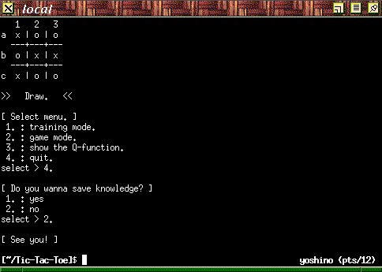

Next: A 背景
Up: 3 プログラムの使い方
Previous: 3.1 知識データのロード
データのロード確認が終わると、プログラムはメニューを表示する。
メニューは以下のような構成になっている。
- 1: training mode
-
プログラムが紅白戦を行うことで学習（Q値の更新）を行う。
このメニューを選択するとトレーニング回数（何試合紅白戦を行うか）
の入力をユーザに促す。
- 2: game mode
-
プログラムとユーザが 1 試合対戦する。先攻後攻は
ランダムに決定される。
- 3: show the Q-function
-
現在の Q-function の値（Q値）を表示する。
- 4: quit
-
プログラムを終了する。このメニューを選択すると、
現在のQ値をファイル ``q.kl1'' としてセーブするかどうか
ユーザに確認を行う。
入力は全て Prolog 形式で行う。
4 以外は、各処理が終了すると
再びメニュー選択に戻るようになっている。

![[i18n checked]](i18n-ok.gif) Q-learning により学習を行う Tic-Tac-Toe プログラム
Q-learning により学習を行う Tic-Tac-Toe プログラム